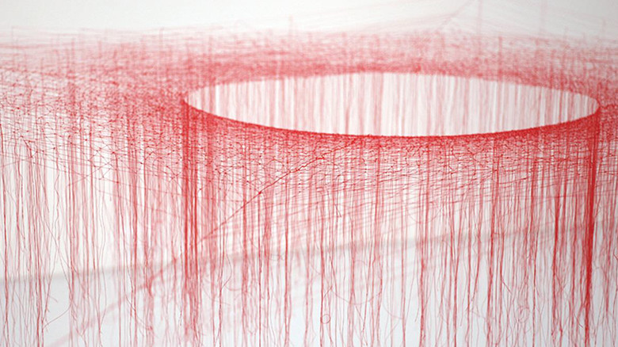

minimal

池内晶子
http://www.taisax.com/akiko/ikeuchi/works/2016/pages/w_52.html-どんな人
糸を使った繊細な作品を多く制作しています。
-解説
白い空間に赤い糸を張りつつ、ところどころ垂らすことによって、空間に赤いもやのようなものがあらわれています。糸自体は強く張らずにゆるめることによって、その縮れ具合から、空気のような質感を表現しています。
-好きなところ
空間にそのまま絵を描いたように見えて綺麗だなと思いました。